Animation · SVG + three.js
两件可以直接拿走用的动画：左边这幅纯 SVG（零脚本、零依赖，存成文件就能用）， 以及下方three.js 实时渲染的 3D 降落过程——进近、放起落架、拉平、接地、反推减速。
车轮与曲柄同步转动，双腿按两段 IK 跟着踏板踩踏，围巾分三段飘动；海面、云、棕榈与海鸥各自以不同速度漂移，形成视差。

单文件 public/art/pelican-bike.svg · 约 57 KB · 不含 JavaScript，可直接当 <img> 或 CSS 背景使用。
黄昏机场的五边进近：远处高空压坡度转弯 → 对正跑道下降、放起落架与襟翼 → 拉平接地冒烟 → 反推减速停稳。镜头从跟拍切到跑道旁的低机位。
拖拽旋转视角 · 滚轮缩放 · 空格 暂停/继续 · R 重播。系统开启「减少动态效果」时停在接地瞬间，可手动播放。
机身是 LatheGeometry 车削轮廓，机翼/垂尾用 Shape 挤出并带上反角与后掠，起落架可收放，襟翼按阶段下偏。
位置、俯仰、横滚、航向、速度、起落架与襟翼都是关键帧轨道，接地瞬间触发轮胎烟与机身抖动。
像素比上限 2、阴影贴图 2048、离屏自动暂停；尊重 prefers-reduced-motion，并提供暂停/重播按钮。
文件：public/art/airplane-landing.js + public/art/three.min.js（r149，MIT）。